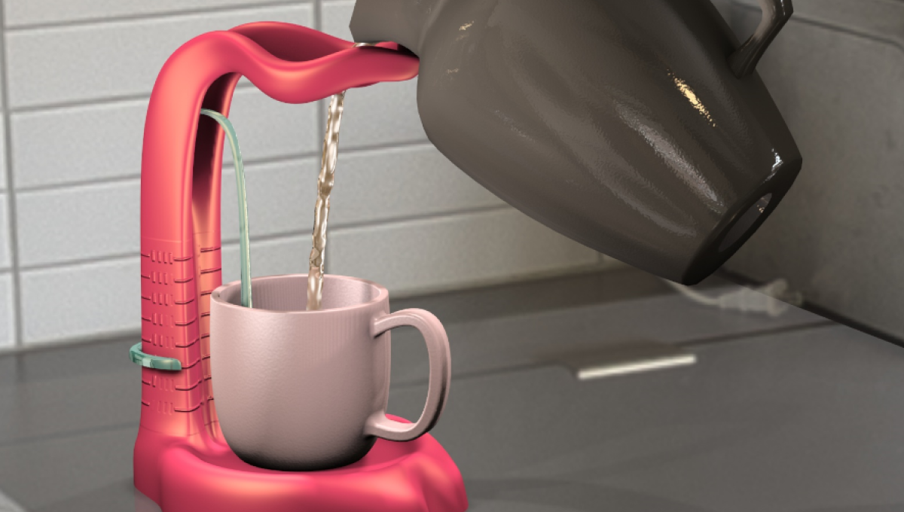

Engagement in learning at school
Summary:
- Trying to get to the root of low engagement and low motivation especially in online classes.
- Explored concepts around emotional and cognitive engagement while participating in class.
- Tested ideas that help focus on learning rather than performance to motivate childern.
Background
Online education beyond pandemic
In the face of a pandemic we have been forced to accept online education and many challenges have come to surface. But beyond pandemic, having developed an infrastructure and adapted to learning models for online education will only be beneficial. Learning can cross the boundaries of time and space and we can move beyond textbook learning towards more interactive, practical learning.
Shift in pedagogy: Sage on stage vs guide by the side
Traditional way of teaching aims at transfers of knowledge. A teacher has more control over the class and monitors what the students are doing . The landscape and the dynamics are different online and there is a need for more shared and collaborative learning.
Problem summary
Current scenario
Teachers have less control over students. Students find it hard to be attentive and there is a missing connection in distant learning through screen. There is a need for shared responsibilities and collaboration.
Existing solutions
There are a lot of products like apps, plugins, that aim to solve the problem by helping the teacher make the class more interactive, through quizzes, games, other incentives.
The gap
Students are still not motivated and assessments are somewhat forced on them. There is polarization where some students are a lot more active while others are still not engaged enough in the interactions.
Some teachers find it overwhelming and a waste of time, and want to complete the syllabus.
Focus of research
Relying on simple and existing methods like cold-calling
Cold-calling refers to nominating a student to speak up even if their hand was not raised or they did not volunteer to participate.
While there are some teachers who do not prefer this practice, it is an excellent way to increase class discussion, help the teacher to check student’s attentiveness and learning, and even increase the students’ comfort level and confidence while participating, over time.
Understanding emotional responses of students
While this technique is convenient for the teachers, some students could initially feel stress, performance anxiety, and an overall negative emotional response when cold-called to answer and they resolve to maladaptive coping strategies like escaping (not attending classes/discussions) which hampers their learning. In an online class, it is especially easier to escape and dodge questions.
Understanding engagement
I went through some existing research and proven concepts for engagement and came acsross literature on cognitive engagement which aligns wih our goal and decided to keep it as a framework for generating ideas and evaluating them.
Design interventions
External locus of autonomy and more relatedness to teacher
The tool features a mascot that does the job of asking questions in the middle and nominating students to answer. The aim is to externalize the locus of control in the teacher-student relation by giving the authoritative powers to a virtual tool. The teacher in this case is to teach and support and not someone to fear which is important for more relatedness in the classroom. The fear of mascots is reduced due to its cute and fun cartoonish appearance and virtual/ non-physical presence leading to more positive emotional response and engagement.

Cheering and celebration for positive emotional response
The nomination or cold-calling of students is made more cheering than cold with a tone of anticipation and celebration to it. Using the virtual medium further, we have the mascot ignite a question bomb that goes off with colorful confettis while announcing the name of a student. The aim is to build some energy with the bomb ticking but release it with a positive celebration feel instead of an harmful explosion. Cheering and welcoming sounds accompany. Thus, the bomb maintains some tension required for attentiveness but using encouragement and cheering (positive) instead of threat or fear of punishment (negative).
Random calling for impartiality but enjoyment
One of the things that works for cold-calling is the anticipation and the fact that students have to be alert. The tool shuffles through all the names as the bomb is ticking and lands on one random name as the bomb goes off to celebrate sounds and confetti. This adds a gamified lottery feel and it is random and impartial.
Perception cloud for better relatability and less judgement
After a random student’s name is displayed, a cloudy speech bubble pops-up with text- speak your mind “I am thinking…”. This is to signify that no rigid answer is expected from the students. They can just talk about and articulate their learnings, whatever is in their head.
Sense of choice for more autonomy and support seeking
Along with the speech bubble “I think..” prompt, there is also the option of- Don’t know the answer? Don’t worry, you may ask “I am confused about..” or “I want to clarify…”. This is to make the adaptive practice of support seeking more apparent to everyone and to give them some choice.
Feedback and learning for encouragement and support
After a few rounds of answers by the students, the teacher can end the discussion with their note. A similar speech bubble animation pops up with prompts “I appreciate…”, “I want to clarify...”. The aim is to acknowledge student’s participation while clearing any misconception. Students need to be given positive feedback for speaking up to reduce the fear of negative evaluation.
Testing and results
A prototype was tested in the middle of an online history class of Amity International School with a control and an experiment set up. The effectiveness was evaluated based on questionnaire, observations and interviews to gauge the effect on students’ enjoyment, perceived competence, pressure/ tension, perceived choice (autonomy), and relatedness.
Overall the tool showed some positive improvement however the sample size was small (15 students) to make any statistically significant remarks.
View Complete ResearchThank You!
-

Improved debugging flow
Led the problem discovery, journey mapping and design of the debugging flow for API tests in Postman.
-

Accessible error signifier
A small change big impact story of creating subtle yet effective error signifiers and reducing the error.
-

Assistive device to pour
A device that helps visually impaired users safely pour hot liquids by communicating with its form.